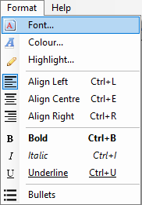
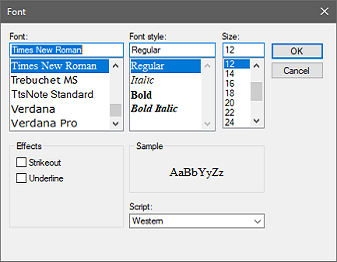

To format the entire document, select the textbox and either type CTRL+A
or click on Edit > Select All:
Then click on either the Format icon or Format > Font and select from the
menu:
To format part of a document, either use the cursor or arrow keys to select the appropriate
part of the document and then follow the same steps as before:

NOTE: You should know that this software is unable to use OpenType fonts.